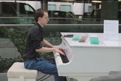

ERASMUS MC ONDERZOEKT EFFECT PIANO IN HAL
< Terug >Het Erasmus MC heeft een grote witte vleugel in de ziekenhuishal geplaatst en gaat de effecten van de pianomuziek op patiënten onderzoeken. Dat staat vandaag in Erasmus Magazine.
Op stations en in ziekenhuishallen zijn de afgelopen jaren piano’s neergezet waarop passanten mogen spelen. Het Erasmus MC heeft zo’n muziekinstrument geplaatst en gaat een stapje verder door daarnaast te onderzoeken wat het effect ervan is op patiënten.  In Rotterdam wordt al langer onderzoek gedaan naar het effect van muziek op gezondheid. Hoogleraar chirurgie Hans Jeekel richtte de onderzoeksgroep Muziek als Medicijn op. Het Sophia Kinderziekenhuis meet het effect van muziek rondom operaties bij kinderen.
Een van de onderzoekers is Aniek de Rooij, die geneeskunde studeerde en het conservatorium deed. Ze vertelt in Erasmus Magazine dat het idee om de piano te plaatsen kwam van hoogleraar klinische epidemiologie en radiologie Myriam Hunink. De Rooij: ‘Zij stapte zelfs uit de trein in Delft om piano te spelen op het station, voordat ze verder reisde.’ Volgens De Rooij blijkt uit twee reviews in The Lancet en Annals of Surgery dat muziek de perioperatieve periode voor patiënten prettiger maakt.